BEFLIX in Cascade
In 1963 Ken Knowlton at Bell Labs wrote BEFLIX, a language for making films on a computer. A frame was a mosaic of 252 by 184 cells, each holding an ink level from 0 to 7; a film was a program of operations on that mosaic (paint a region, draw a line, write letters, shift, zoom, expand, copy, dissolve), and a camera photographed the grid, frame after frame. This page is that machine rebuilt as a Cascade node graph, one node per operation. Its footage is Halfworld's The Sirens' Song, drawn by Halfworld's own programs; its clock is Halfworld's recording of the scene, whose loudness drives the dissolves, the zoom, the words and the ink. And every frame it makes is also a LEGO mosaic you could build.
The film, with sound: media/beflix.mp4, 51.71 s, 1241 frames at
24 a second, 9 MB,
every frame cooked headless by cascade run --frames from beflix.cascade. The sound is Halfworld's
recording of OD-B12-S03 over its book's bed (Bronze Council, The Cattle of the Sun, looped as Halfworld's own film
loops it), the bed at 0.18 ducked to 0.1 while the voice speaks.
The scene, the voice and the line
Book XII, OD-B12-S03, The Sirens' Song: the wind dies, Odysseus seals his crew's ears with wax, they bind him to the mast, the Sirens promise him all knowledge, he strains to be loosed, and Perimedes and Eurylochus tie him tighter until the song fades. It was chosen over Polyphemus because its recording is clean: Halfworld's voice manifest cuts the recording into seven segments, and each speaks the drive script's sentence for it, a narrator throughout. The Cyclops scenes' dialogue segments speak the scene's summary in the first person instead of a line ("I promise: Nobody the last death as a guest-gift, and collapses"), and only one dialogue segment in the whole manifest is close to the line Halfworld authored for it.
| Segment | Starts (s) | Lasts (s) | Kind | What the recording says |
|---|---|---|---|---|
| 0 | 0.00 | 4.96 | scene header | Scene three. The Sirens' Song. |
| 1 | 5.66 | 7.00 | narration | The wind dies as the ship approaches the Sirens' island. |
| 2 | 13.08 | 7.40 | auditory action | Odysseus softens wax and seals every crewman's ears. |
| 3 | 20.78 | 9.16 | narration | The men bind him upright to the mast and row past the flowered shore. |
| 4 | 30.36 | 5.56 | auditory action | The Sirens promise total knowledge. |
| 5 | 36.22 | 5.36 | auditory action | Odysseus struggles and signals to be released. |
| 6 | 41.88 | 9.40 | narration | Perimedes and Eurylochus tighten the ropes until the song fades. |
So what the voice says is set as it is said: project.BxVoice reads the envelope and the segments at
$T, and a TEXT node types each sentence word by word across the bottom of the frame. Homer's line is not in the
recording. The Sirens' song, as Halfworld wrote it for this scene (spoken-lines, turn T04), is the Poem Field: it goes out from
the Sirens' mouths as rings of words while the narrator says "The Sirens promise total knowledge", and it is silent. The crew
have wax in their ears; the audience, like Odysseus, is the one who takes it in.
Come here, far-famed Odysseus, great glory of the Achaeans — stay your ship and hear our voices. No man has ever rowed past us till he heard the honeyed song from our lips, and went away delighted, knowing more than he knew. For we know all that Argives and Trojans suffered on Troy's wide plain by the will of the gods — we know everything that comes to pass on the nourishing earth.
One frame, three looks
The key frame, 34.42 s: the Sirens promise, the song in the field, his face inset. The same mosaic, the
camera node's mode changed: Knowlton's cells, Halfworld's halftone (its post-pass ported: black dots on warm paper, one
a cell, after the ink law's floor and S-curve), and the LEGO mosaic (144 x 96 studs of 1 x 1 round tiles).
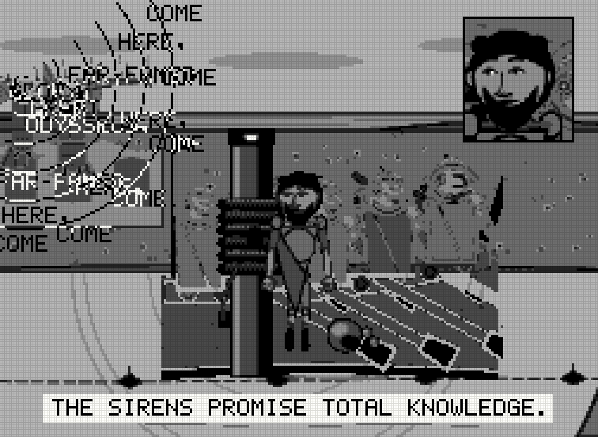
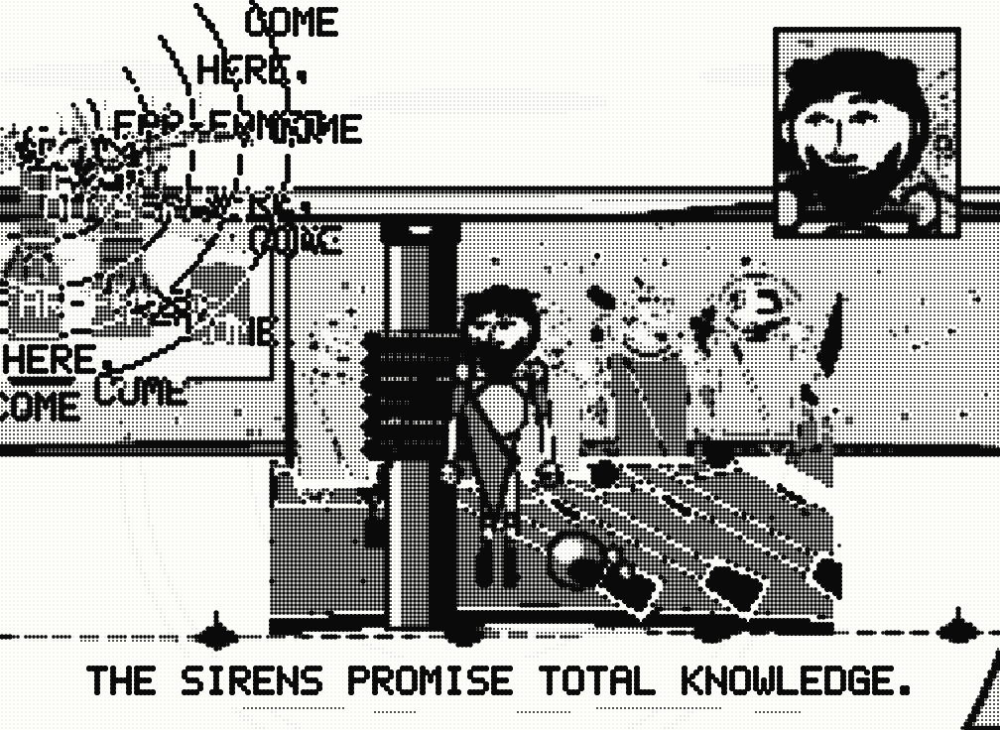
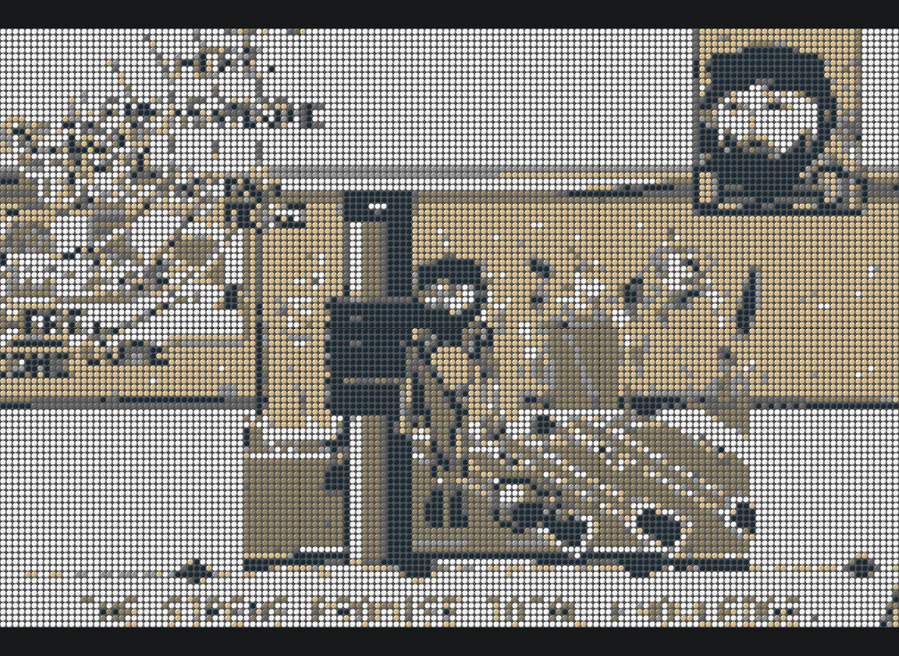
And a print: media/beflix.svg (1,028 KB), the key frame's halftone as
vectors, one disc per inked cell, written by the graph's project.BxPrint.

The machine, live
The graph's static player (cascade build, 504 KB, of which the baked plates are 304 KB and the
voice envelope 7 KB), with the recording as its clock: press Play and
the frame shown is the sound's time (the player cooks the newest frame asked for and skips the rest, so the picture keeps the
voice's time). Change the look, the LEGO resolution and colours, the ink; the parts count follows every frame.
Every frame is a LEGO mosaic
project.BxLego resamples the mosaic to a grid of studs, prints each stud's mean darkness through
Halfworld's ink law, and maps the eight ink levels to LEGO colours that fall in the same order of lightness, paper to ink: White,
Tan, Light Bluish Grey, Dark Tan, Dark Bluish Grey, Black. One 1 x 1 round tile on every stud, 48 x 48 baseplates beneath, as the
LEGO Art mosaics are built. Offline, tools/beflix_kit.py writes the grid as an LDraw model with the line's kitlib and
checks it: every part on the grid, none loose, none in the same space as another.
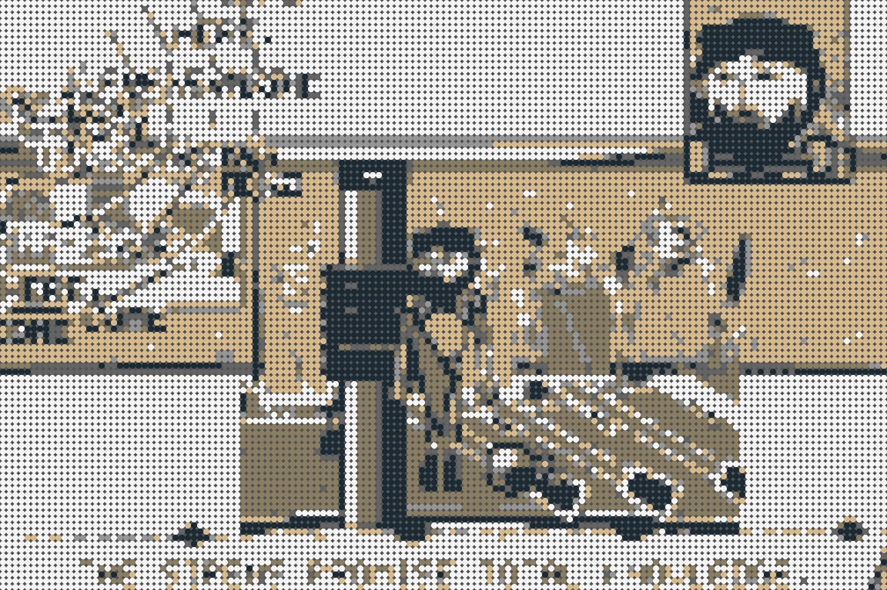
| Colour | Part | Pieces |
|---|---|---|
| White | 98138, 1 x 1 round tile | 6,067 |
| Tan | 98138, 1 x 1 round tile | 3,015 |
| Dark Tan | 98138, 1 x 1 round tile | 1,711 |
| Black | 98138, 1 x 1 round tile | 1,560 |
| Light Bluish Grey | 98138, 1 x 1 round tile | 800 |
| Dark Bluish Grey | 98138, 1 x 1 round tile | 671 |
| Light Bluish Grey | 4186, 48 x 48 baseplate | 6 |
| Total | 13,830 |
At the player's other resolutions the same frame is 48 x 32 studs on one baseplate, 96 x 64 on four, or the whole mosaic, 252 x 184, one tile a cell: 46,368 tiles on 24 baseplates.
The flip-book: a film strip in LEGO
Twelve moments of the film, each a 48 x 34 mosaic on its own 48 x 48 baseplate between black film edges with sprocket holes, the twelve plates side by side: kit/cascade.beflix-flipbook.mpd, 27,660 pieces (27,648 round tiles, 12 baseplates), 0 loose, 0 clashes. Frames at 6.5, 10.0, 15.0, 18.0, 24.0, 28.6, 31.5, 34.4, 38.0, 40.8, 43.6, 47.0 s.
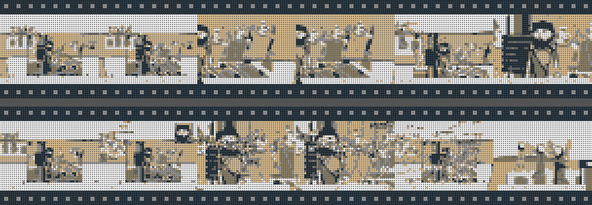
Knowlton's operations, one node each
Each picture is that node alone applied to the same Halfworld plate (Odysseus close, straining) and photographed in the
cells look, cooked by Cascade (tools/beflix_ops.mjs). The mosaic travels on the wires as a project type,
project.mosaic: width, height and one byte a cell. Every node makes a new one; nothing is changed in place.
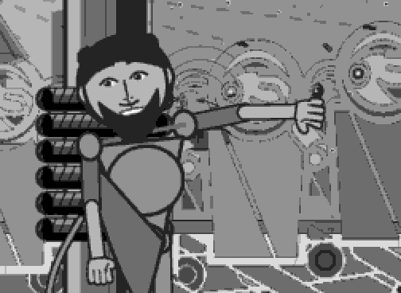
project.BxPlateThe footage. A layer of the Sirens' scene, drawn by Halfworld's own asset program, placed by the scene's own stage(), baked to ink levels; posed by state (a stroke cycle is a phase expression), moved by a keyframe channel (the shore panning past).
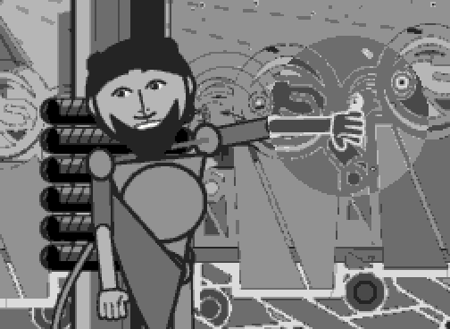
project.BxPaintFill a region (rectangle, ellipse or frame) with an ink level by a combining rule: set, darken, lighten, add, subtract, invert, xor. The film uses it for the flash when the song begins.
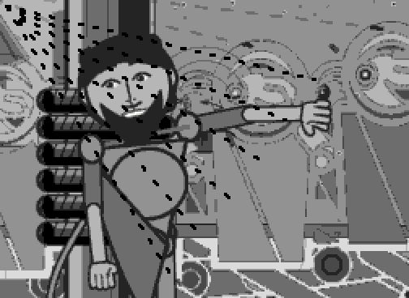
project.BxLineA line of cells, or a fan of them, dashed and marching: the Sirens' song reaching the mast. The voice lengthens the dashes.
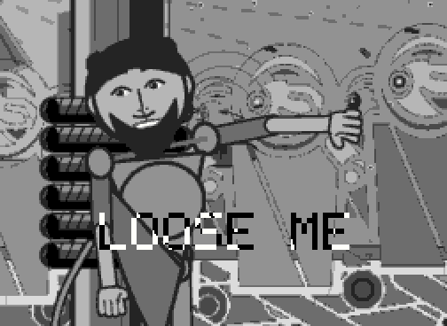
project.BxTextWords in the mosaic's own 5 x 7 letters, magnified by whole cells. Wired to the voice, it types what the narrator says as he says it.
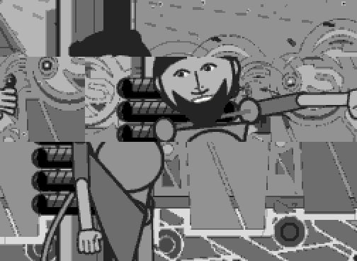
project.BxShiftMove a region of cells, wrapping or leaving paper. With the voice on its drive input it shakes: Odysseus against the ropes.
project.BxZoomCell magnification about a centre, nearest cell: the grain grows. The camera closes on Odysseus at the mast this way before the film cuts to the true close shot.
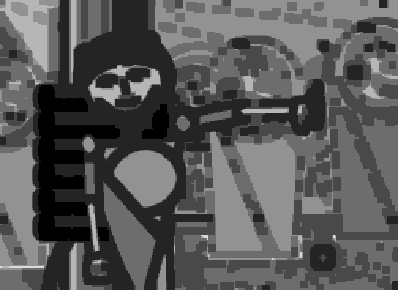
project.BxExpandInk takes the darkest of its neighbours. On the title it swells with the voice.
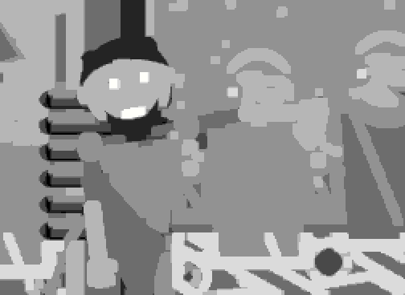
project.BxExpandInk withdraws to the lightest of its neighbours: the song fading, the last seconds of the film.
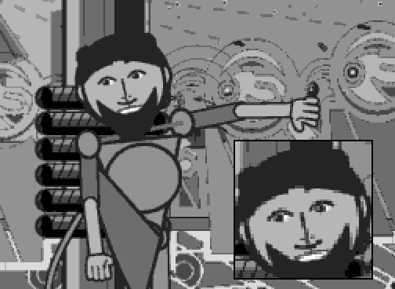
project.BxCopyA region laid elsewhere, magnified, framed, from the field or a second mosaic: while the Sirens promise, his face in a window of the wide shot.
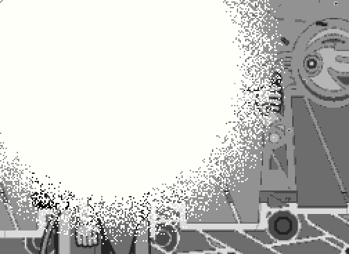
project.BxDissolveA to B cell by cell, each cell turning when the amount passes its threshold in a field: noise, radial, ordered (Bayer), rows, rain. Every cut in the film is one; the voice pushes a dissolve under way.
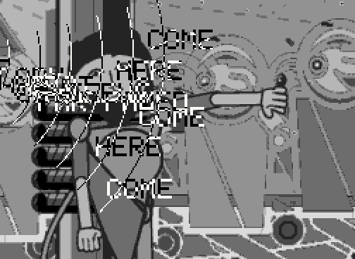
project.BxPoemFieldAfter Knowlton and VanDerBeek: Homer's words as rings from the Sirens' mouths, each ring the next word, repeated along its arc, multiplying as it travels, moving only while the voice sounds.
Also in the graph: project.BxMosaic (a fresh frame), project.BxVoice (the recording as data:
amplitude, seconds voiced so far, the line and its progress), project.BxLego, project.BxCamera and
project.BxPrint. The edit is expressions on $T and one keyframe channel; the voice reaches the operators
through wires into their drive inputs.
Where this comes from
Knowlton wrote BEFLIX in 1963 to make A Computer Technique for the Production of Animated Movies, a film that
explains itself; the mosaic was photographed from a Stromberg-Carlson 4020 microfilm recorder, so a film was only ever a grid of
numbers and a program. From 1964 to 1967 he and the filmmaker Stan VanDerBeek made the Poem Fields with it: words moving
through fields of pattern, coloured afterwards on film. Halfworld, the Odyssey's procedural atlas, says in its methods paper that
it is the same machine with three substitutions: the cell grid became a halftone lattice, the ink level became continuous
darkness, and the operations became the canvas calls of four hundred asset programs; its engine still carries an eight-step
quantizer, inkLevel(l), as a homage. This graph turns the substitution back: Halfworld's programs are run, and what
they draw is quantized with that same function to Knowlton's 252 by 184 by eight levels, then worked by his operations. LEGO Art
closes the loop from the other side: its mosaics are grids of 1 x 1 round tiles in a few colours, which is to say a BEFLIX frame you
press into a baseplate.
The critic
tools/verify.mjs cooks the graph headless (static check, 6 frames across the film, all
distinct) and asks: Does the song reach the ship: is the Poem Field's ink there only while the Sirens sing, does the voice thicken the ink, and is the same frame a LEGO mosaic? Answer: yes (songInkPixels 252,708, noSongInkPixels 236,178, voiceDrivenInkPixels 334,106, voiceMutedInkPixels 137,324, legoTanPixels 58,996). Run 2026-09-30 02:52 UTC,
with the five other graphs of the project; verify.json.
What Cascade could not do
- Many instances of one node race. Cascade 0.7.1's command line compiles a project node once per instance into one cache
file, concurrently; this graph holds six plates, five dissolves and five texts, and most runs failed with "does not export
execute".
tools/cascade.mjslaunches the same CLI with that one function serialized as it loads (nothing in node_modules is changed); every run since has succeeded first time. - No cache across frames. A node may not keep module state, so each plate parses its baked layer at every frame (the plates are split one file a layer to keep that small). In the browser a frame cooks in about a quarter of a second, so the player plays at the sound's time by skipping frames rather than showing all 24 a second.
- The player has no sound. Nothing in a graph can play audio, so the page plays the recording and drives the player's
seekfrom it. - Skia draws many small arcs slowly. One path of five thousand dots took three seconds headless, so the camera draws into a pixel buffer: a dot of each ink level computed once a frame and stamped on every cell that holds it.
- Only images come out of a frame sequence. The LEGO grids and the SVG print are assets the CLI writes into
.cascade-cache/under a hash, found by a second, whole-graph run; naming a node narrows the cook to its inputs. - Keyframe channels are scalar, and inputs take no expressions. The shore's pan is one channel and the Sirens follow it
by
ch("island/pan"); a point that moves is an expression returning[x, y]; every value the voice drives comes in on adriveinput beside a prop, since a wire and an expression cannot share a port. - No shaded 3D. The LEGO look in the player is drawn by the camera node from above; the built model is rendered by the line's own three.js renderer.
The files
beflix.cascade: the graph (35 nodes)nodes/: BxCamera, BxCopy, BxDissolve, BxExpand, BxLego, BxLine, BxMosaic, BxPaint, BxPlate, BxPoemField, BxPrint, BxShift, BxText, BxVoice, BxZoomlib/mosaic.ts,lib/camera.ts: the mosaic, the font, the ink law, the LEGO colours; the three looksassets/beflix/: the baked plates and the voice (tools/bake_halfworld.mjs,tools/bake_voice.mjs)tools/beflix_film.mjs,beflix_ops.mjs,beflix_kit.py,beflix_plan.py,cascade.mjs- players/beflix.html (the player page) and
players/beflix/(cascade build) - The Odyssey in Cascade · the Odyssey line